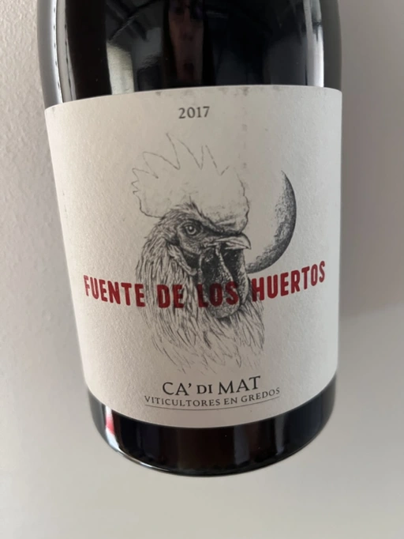

- Type
- Red Still, Dry
- Producer
- Ca’ di Mat
- Vintage
- 2017
- Location
- Spain, Vinos de Madrid DO
- Grapes
- Grenache
- Alcohol
- 13.5
- Sugar
- 1.5
- Price
- 572 UAH, 1034 UAH
- Cellar
- 2 bottles
Producer
Project by Curro Bareño and Jesus Olivares from Fedellos do Couto.
Ratings
2022-09-13 - 8.50
A beauty to fall in love with. More sophisticated, delicate and elegant than Andrinal. Wild strawberry, raspberry, roasted bark, red flowers, wet forest floor, milk chocolate, and blood. Almost perfectly balanced, nuanced with a long flavourful aftertaste. In a blind tasting, I would talk about the mineral version of good Pinot Noirs from the Southern Island of New Zealand.
Wine #4 on Mixed Bag Vol. 3.
2022-11-27 - 8.25
Once again, I confirm this high-altitude Garnacha can be easily mistaken for some warm Pinot Noir. Stewed wild strawberries mixed with blood, milk chocolate, roasted bark, and red flowers. Better to chill it a little bit. Delicate, fresh and nuanced with a mineral finish. Unseemly quaffable. Just don’t tell anyone!
Related